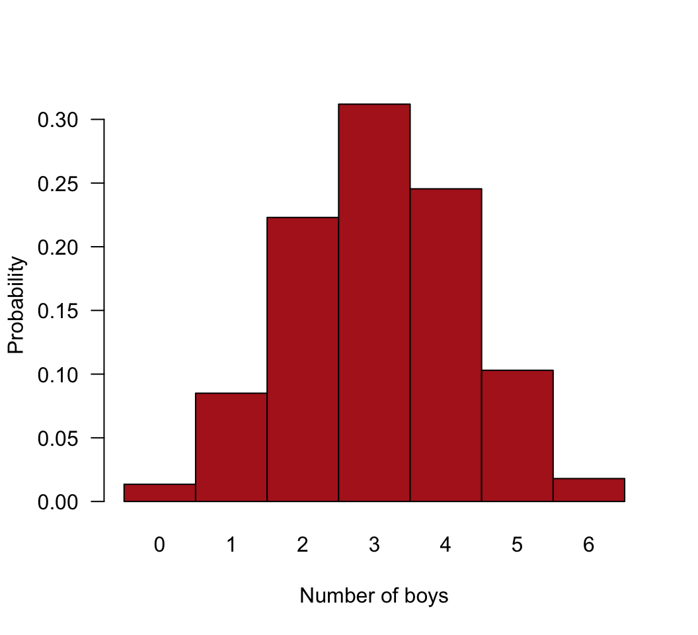
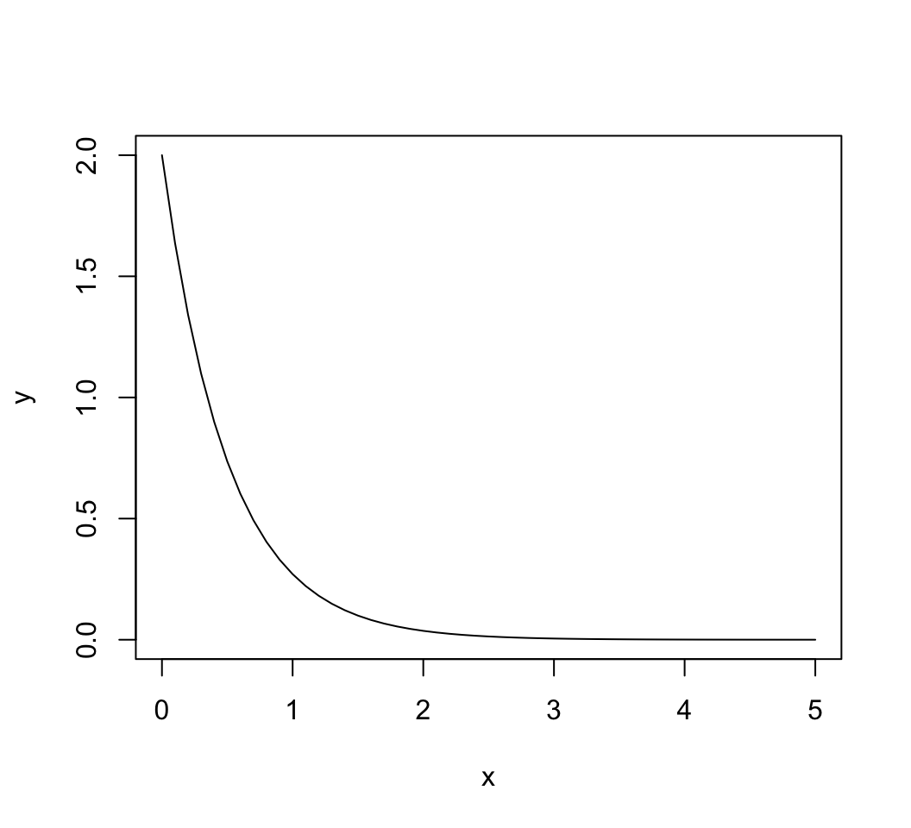
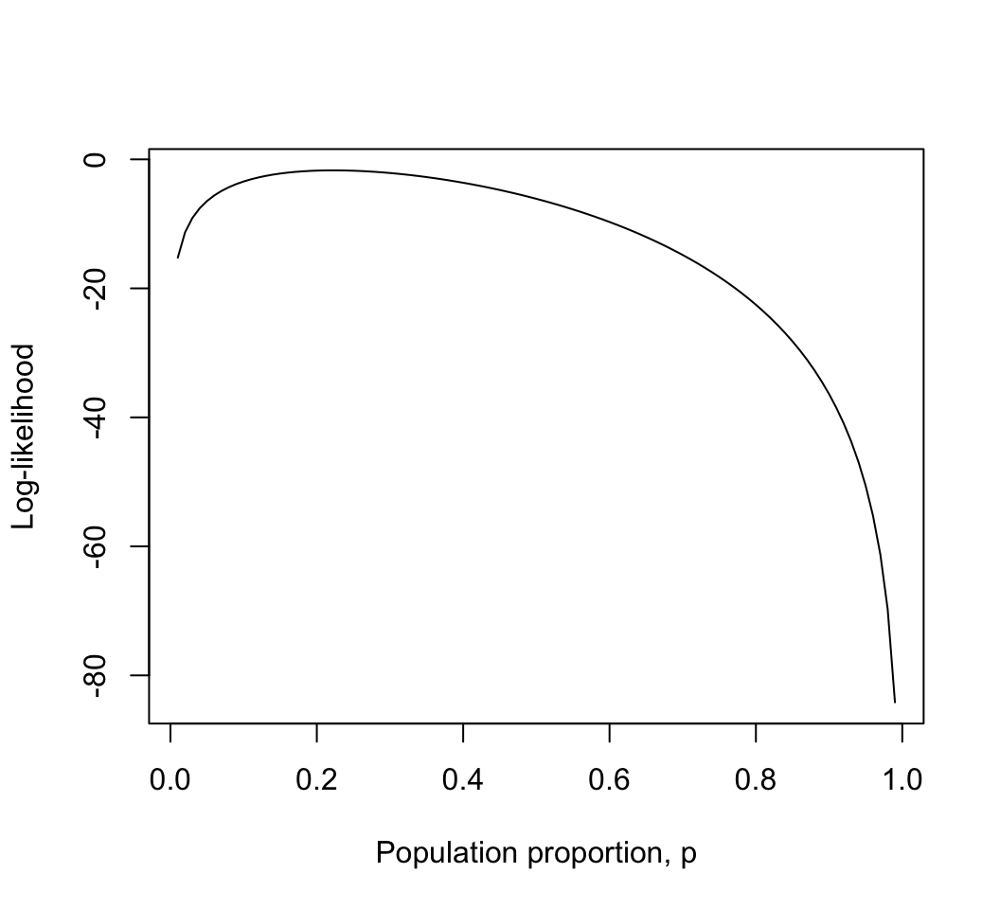
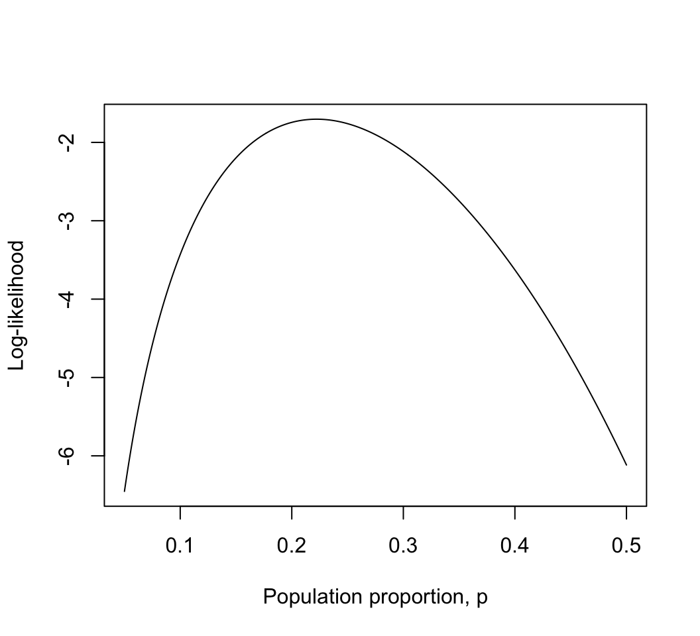
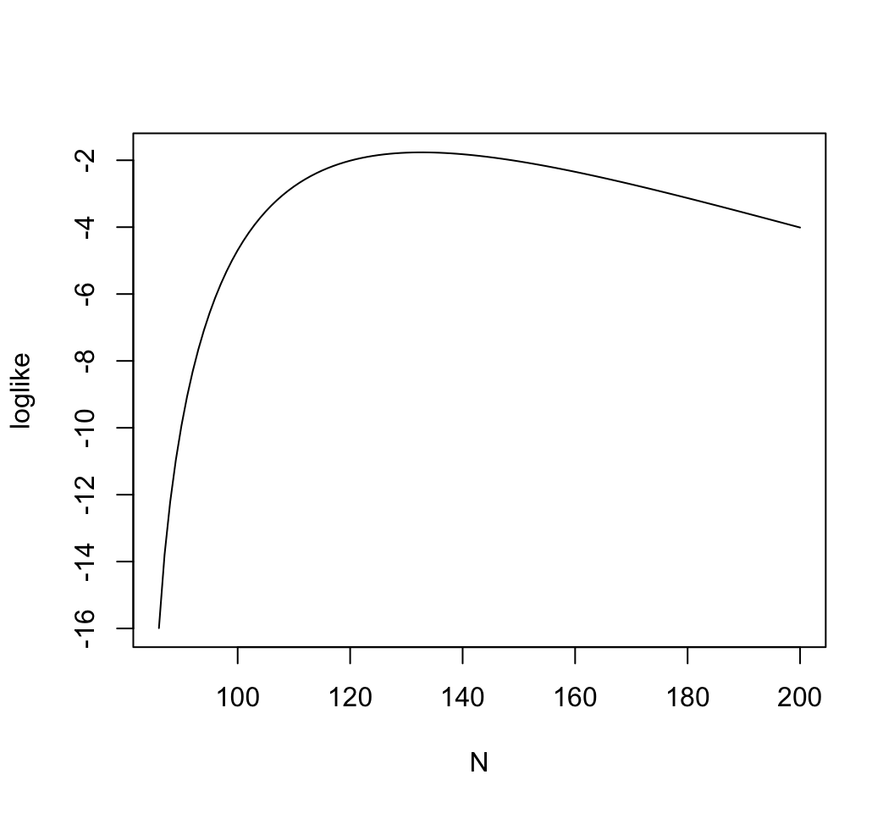
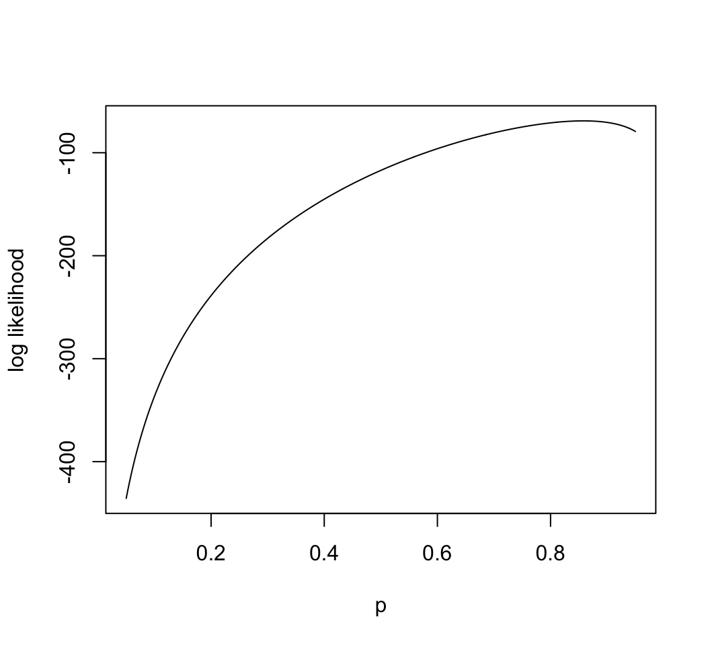
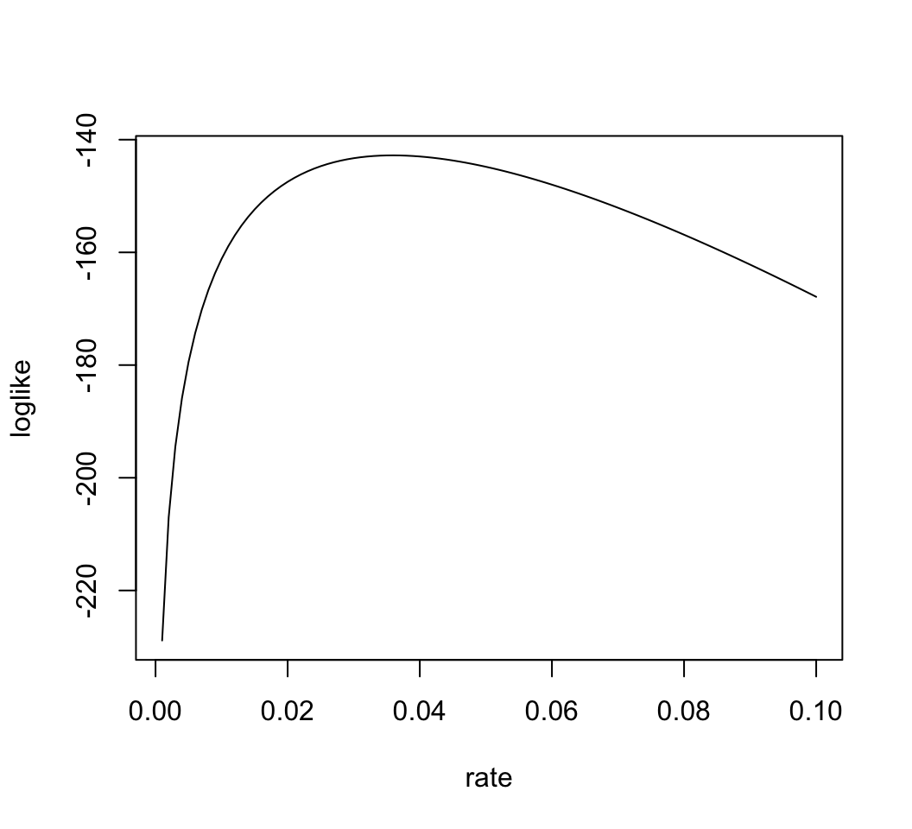
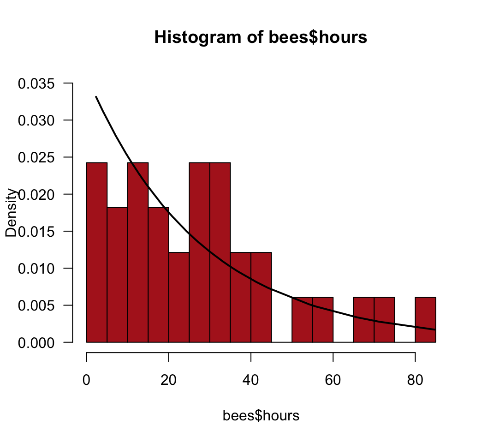

Likelihood methods are especially useful when modeling data having a probability distribution other than the normal distribution (e.g., binomial, exponential, etc). See the “Probability & likelihood” tab of the R tips web pages for help.
To estimate a parameter, we treat the data as given and vary the parameter to find that value for which the probability of obtaining the data is highest. This value is the maximum likelihood estimate of the parameter. The likelihood function is also used to obtain a likelihood-based confidence interval for the parameter. This confidence interval is a large-sample approximation, and may be inaccurate for small sample size, depending on the probability distribution of the data.
The log-likelihood ratio test can be used to compare the fits of two nested models to the same data. The “full” model fits the data using the maximum likelihood estimates for the parameter(s) of interest (for example, a proportion p). The “reduced” model constrains the parameter values to represent a null hypothesis (for example, that p = 0.5, or that p is equal between two treatments). The G statistic is calculated as twice the difference between the log-likelihoods of the two models (“full” minus “reduced”):
G <- 2 *(loglikefull - loglikereduced)G is also known as the deviance. Under the null hypothesis, G has an approximate χ2 distribution with degrees of freedom equal to the difference between the “full” and “reduced” models in the number of parameters estimated from data.
We’ll start by getting familiar with the commands in R to calculate probabilities.
The probability of heads in a coin toss is 0.5. If you flip a coin 10 times, what is the probability of obtaining exactly 5 heads and 5 tails?
The fraction of human babies born who are boys is about 0.512. If 20 newborn babies are randomly sampled, what is the probability that exactly 10 are boys?
Plot the entire probability distribution for the number of boys in families having six children. Assume the probability that any one child is a boy is 0.512.
If mortality is independent of age, then the probability of surviving X years after birth, and then dying in the X + 1st year, will follow a geometric distribution. X is any integer from 0 to infinity. If the probability of dying in any given year is 0.1, what fraction of individuals are expected to survive 10 years and then die in their 11th year?*
Refer to the previous question. If the probability of death in any give year is 0.1, what fraction of individuals die before they reach their 6th birthday?**
In an environment where prey are randomly distributed, the search time between discovered prey items will follow an exponential distribution. Imagine an environment in which the mean search time between prey items is 0.5 hours. What is the probability density corresponding to a search time of 2 hours?***
Refer to the previous problem. Create a line plot of the exponential probability curve over most the range of possible values for search time between items (e.g., over the range of values between 0 and 5 hours).
*0.03487
**0.46856
***0.03663
# 1.
dbinom(5, size=10, p=0.5)## [1] 0.2460938# 2.
dbinom(10, size=20, p=0.512)## [1] 0.1751848# 3.
z <- dbinom(0:6, size=6, p=0.512)
names(z) <- as.character(0:6)
barplot(z, space=0, ylab="Probability", col = "firebrick", las = 1, xlab = "Number of boys")
# 4.
dgeom(10, 0.1)## [1] 0.03486784# 5.
sum(dgeom(0:5, 0.1))## [1] 0.468559# 6.
dexp(2, rate=1/0.5)## [1] 0.03663128# 7.
x <- seq(0, 5, by = 0.1)
y <- dexp(x, rate = 1/0.5)
plot(y ~ x, type = "l")
Individuals of most plant species are hermaphrodites (with both male and female sexual organs) and are therefore prone to inbreeding of the worst sort: having sex with themselves. The mud plantain, Heteranthera multiflora, has a simple mechanism to avoid such “selfing.” The style deflects to the left in some individuals and to the right in others. The anther is on the opposite side. Bees visiting a left-handed plant are dusted with pollen on their right side, which then is deposited on the styles of only right-handed plants visited later. To investigate the genetics of this variation, Jesson and Barrett (2002, Proc. Roy. Soc. Lond., Ser. B, Biol. Sci. 269: 1835-1839) crossed pure strains of left- and right-handed flowers, yielding only right-handed F1 offspring, which were then crossed with one another. Six of the resulting F2 offspring were left-handed, and 21 were right-handed. The expectation under a simple model of inheritance would be that their F2 offspring should consist of left- and right-handed individuals in a 1:3 ratio (i.e., 1/4 of the plants should be left-handed).
Generate a vector that includes a range of possible values for the population proportion of left-handed flowers, p, from 0.01 to 0.99 in increments of 0.01.
Given the results above, calculate the log-likelihood of each value for p in the F2 generation.
Create a line plot of the log-likelihood against the range of values for p. What is the resulting curve called? Can you see approximately the value of p corresponding to the highest point of the curve? What is this value called?
To get closer to this value, repeat steps (1) to (3) using a narrower range of values for p surrounding the highest point in the curve and an additional decimal point.
Use your results to determine the maximum likelihood estimate of the proportion of left-handed F2 flowers.
Provide a likelihood-based 95% confidence interval for the population proportion.*
(Optional) Install and use the bbmle package to find
the maximum likelihood estimate and 95% confidence interval for the
proportion of left-handed flowers. How do the results compare with your
calculations?
We can compare the fits of two models to these same data, to test the null hypothesis that the proportion of left-handed flowers in the cross is 1/4 (i.e., the proportion predicted by the simplest genetic model for flower handedness). To begin, obtain the log-likelihood corresponding to the maximum likelihood estimate of the proportion of left-handed flowers. This represents the fit of the “full” model to the data. This model estimated one parameter from the data (p, estimated using maximum likelihood).
Now obtain the log-likelihood of the value for p specified by the null hypothesis. This represents the fit of the “reduced” model to the data. This reduced model estimated zero parameters from the data (instead, p was specified by the null hypothesis).
Calculate the G statistic for the log-likelihood ratio test**. To obtain a P-value for the test, calculate the tail probability from the \(\chi^2\) distribution as follows,
1 - pchisq(G, df)
where df is the degrees of freedom, calculated as the
difference between the two models in the number of parameters estimated
from the data.
Optional: How similar is the result from your log-likelihood
ratio test to that from an ordinary \(\chi^2\) goodness of fit test? Analyze the
same data using the chisq.test() command in R and comment
on the outcome.
* 0.094 < p < 0.400
** 0.114
# 1. Vector
p <- seq(0.01, 0.99, by = 0.01)
# 2. The log-likelihoods
loglike <- dbinom(6, size = 27, prob = p, log = TRUE)
# 3. Log-likelihood curve, showing maximum likelihood estimate
plot(loglike ~ p, xlab="Population proportion, p", ylab="Log-likelihood", type="l")
# 4. Narrower range of values for p
p <- seq(0.05, 0.5, by = 0.001)
loglike <- dbinom(6, size = 27, prob = p, log = TRUE)
plot(loglike ~ p, xlab="Population proportion, p", ylab="Log-likelihood", type="l")
# 5. Maximum likelihood estimate
phat <- p[loglike == max(loglike)]
phat## [1] 0.222# 6.
# 1.92-unit support limits.
# This first method gives an interval slightly narrower than the real values
range(p[loglike >= (max(loglike) - 1.92)])## [1] 0.095 0.399# To be conservative, take outer edge of this interval
max(p[loglike < (max(loglike) - 1.92) & p < 0.222])## [1] 0.094min(p[loglike < (max(loglike) - 1.92) & p > 0.222])## [1] 0.4# 7.
library(bbmle)
pNegLogLike <- function(p){-dbinom(6, size=27, p, log=TRUE)}
z <- mle2(pNegLogLike, start=list(p=0.5))## Warning in dbinom(6, size = 27, p, log = TRUE): NaNs produced
## Warning in dbinom(6, size = 27, p, log = TRUE): NaNs produced
## Warning in dbinom(6, size = 27, p, log = TRUE): NaNs produced
## Warning in dbinom(6, size = 27, p, log = TRUE): NaNs producedsummary(z)## Maximum likelihood estimation
##
## Call:
## mle2(minuslogl = pNegLogLike, start = list(p = 0.5))
##
## Coefficients:
## Estimate Std. Error z value Pr(z)
## p 0.222223 0.080009 2.7775 0.005479 **
## ---
## Signif. codes: 0 '***' 0.001 '**' 0.01 '*' 0.05 '.' 0.1 ' ' 1
##
## -2 log L: 3.407838pProfile <- profile(z)
confint(pProfile, method="uniroot")## 2.5 % 97.5 %
## 0.09494227 0.39989553# 8. Log likelihood full model
LLfull <- max(loglike)
LLfull## [1] -1.703923# 9. Log likelihood reduced model
LLreduced <- loglike[p == 0.25]
LLreduced## [1] -1.760941# 10. Log likelihood ratio statistic
G <- 2 * (LLfull - LLreduced)
G## [1] 0.11403691 - pchisq(G, 1)## [1] 0.7355942# 11. Using chisq.test
chisq.test(c(6, 21), p = c(0.25, 0.75))##
## Chi-squared test for given probabilities
##
## data: c(6, 21)
## X-squared = 0.11111, df = 1, p-value = 0.7389Counting elephants is more challenging than you might think, at least when they live in dense forest and feed at night. Eggert et al. (2003. Molecular Ecology 12: 1389-1402) used mark-recapture methods to estimate the total number of forest elephants inhabiting Kakum National Park in Ghana without having to see a single one. They spent about two weeks in the park collecting elephant dung, from which they extracted elephant DNA. Using five genetic markers, they generated a unique DNA fingerprint for every elephant encountered in this way. Over the first seven days of collecting they identified 27 elephant individuals. Refer to these 27 elephants as marked. Over the next eight days they sampled 74 individuals, of which 15 had been previously marked. Refer to these 15 elephants as recaptured. We would like to use these numbers to estimate the total number of elephants in the park.
If we can make the following assumptions,
then the number of recaptured (i.e., previously marked) individuals X in the second sample should have a hypergeometric distribution with parameters k (the size of the second sample of individuals), m (total number of marked individuals in the population), and n (total number of unmarked individuals in the population).
Using the appropriate command in R for the hypergeometric distribution, calculate the maximum likelihood estimate for the total number of elephants in the park. Note that the total number is n + m, where n is the unknown parameter to be estimated. Note also that only integer values for n are allowed, and that n cannot be smaller than k - X, the observed number of unmarked individuals in the second sample.*
Calculate a likelihood-based 95% confidence interval for the total number of elephants.**
* 133
** 104 < N < 193
# 1. Estimate N
m <- 27 # total marked individuals in the population
k <- 74 # size of second sample
X <- 15 # number of recaptures
# Note that N must be at least 86 = 74 - 15 + 27
N <- 86:200
loglike<-dhyper(15, 27, N - 27, 74, log = TRUE)
# or
loglike<-dhyper(X, m, n = N - 27, k, log = TRUE)
plot(loglike ~ N, type="l")
max(loglike)## [1] -1.763941N[loglike == max(loglike)]## [1] 133# 2. 95% confidence interval
z <- N[loglike < max(loglike) - 1.92]
c( max(z[z < 133]), min(z[z > 133]) )## [1] 104 193The movement or dispersal distance of organisms is often modeled using the geometric distribution, assuming steps are discrete rather than continuous. For example, M. Sandell, J. Agrell, S. Erlinge, and J. Nelson (1991. Oecologia 86: 153-158) measured the distance separating the locations where individual voles, Microtus agrestis, were first trapped and the locations they were caught in a subsequent trapping period, in units of the number of home ranges. The data for 145 male and female voles are here. The variable “dispersal” indicates the distance moved (number of home ranges) from the location of first capture. If the geometric model is adequate, then Pr[X = 0 home ranges moved] = p Pr[X = 1 home ranges moved] = (1-p)p Pr[X = 2 home ranges moved] = (1-p)2p and so on.
Tabulate the number of home ranges moved by voles in this study. Use the data from both sexes combined.
Using the appropriate commands in R, calculate the log-likelihood of each of a range of possible values for p, the parameter of the geometric distribution. Plot the log likelihood against p.
Calculate the maximum-likelihood estimate of p and the likelihood based 95% confidence interval.
Use the appropriate R command and the maximum likelihood estimate of p to calculate the predicted fraction of voles dispersing 0, 1, 2, 3, 4, and 5 home ranges.
Use the result in (3) to calculate the expected number* of voles (out of 145) dispersing 0 - 5 home ranges, assuming a geometric distribution. How does this compare with the observed frequencies?
* 124.41 17.67 2.51 0.36 0.05 0.01
x <- read.csv(url("https://www.zoology.ubc.ca/~bio501/R/data/vole.csv"))
head(x)## sex dispersal
## 1 female 0
## 2 female 0
## 3 female 0
## 4 female 0
## 5 female 0
## 6 male 0# 1. Tabulate number of home ranges moved
table(x$dispersal)##
## 0 1 2
## 123 20 2# 2. MLE of p
p <- seq(0.05, 0.95, by = 0.001)
# Using for loop
loglike <- vector()
for(i in 1:length(p)){
loglike[i] <- sum(dgeom(x$dispersal, prob=p[i], log = TRUE) )
}
plot(p, loglike, type="l", xlab="p", ylab="log likelihood")
# 3. MLE of p
max(loglike)## [1] -69.0532phat <- p[loglike == max(loglike)]
z <- p[loglike < max(loglike) - 1.92]
c( max(z[z < 0.858]), min(z[z > 0.858]) )## [1] 0.800 0.906# 4. Expected numbers
frac <- dgeom(0:5, prob=phat)
round(frac,4)## [1] 0.8580 0.1218 0.0173 0.0025 0.0003 0.0000expected <- frac * nrow(x)
round(expected, 2)## [1] 124.41 17.67 2.51 0.36 0.05 0.01# Use the appropriate R command and the maximum likelihood estimate of p to calculate the
# predicted fraction of voles dispersing 0, 1, 2, 3, 4, and 5 home ranges.
frac <- dgeom(0:5, prob=phat)
round(frac,4)## [1] 0.8580 0.1218 0.0173 0.0025 0.0003 0.0000# Expected distances moved
dist <- nrow(x) * frac
round(dist, 2)## [1] 124.41 17.67 2.51 0.36 0.05 0.01# Compare with observed:
table(x$dispersal)##
## 0 1 2
## 123 20 2Life spans of individuals in a population are often approximated by an exponential distribution. To estimate the mortality rate of foraging honey bees, P. K. Visscher and R. Dukas (1997. Insectes Sociaux 44: 1-5) recorded the entire foraging life span of 33 individual worker bees in a local bee population in a natural setting. The 33 life spans (in hours) are here.
Plot the frequency distribution of lifespans of the 33 bees. Choose the option to display probability density instead of raw frequency. Does the distribution of lifespans resemble an exponential distribution (make sure to try different bin widths of the histogram)?
Use the exponential approximation and maximum likelihood to estimate the hourly mortality rate of bees.*
Using the maximum likelihood estimate, calculate the probability density for the exponential distribution across a range of values for lifespan. Draw this relationship between probability and lifespan on top of the frequency distribution you plotted in (1). Comment on the fit between the data and the exponential distribution you fitted. Is the exponential distribution a good fit to these data?
Assume (for the purposes of this exercise) that an exponential probability model is reasonable. Calculate the likelihood-based 95% confidence interval for the mortality rate.**
Calculate the maximum likelihood estimate for the mean lifespan, with approximate 95% likelihood based confidence interval.***
(Optional) Use the bbmle package to find the maximum
likelihood estimate and 95% confidence interval for the hourly mortality
rate of bees. How do the results compare with your
calculations?
* 0.036 / hour
** (0.025, 0.050) / hour
*** 27.8 hours; 95% CI: (20, 40) hours
bees <- read.csv(url("https://www.zoology.ubc.ca/~bio501/R/data/bees.csv"))
head(bees)## id hours
## 1 1 7.1
## 2 2 2.3
## 3 3 9.6
## 4 4 25.8
## 5 5 14.6
## 6 6 12.8# 1. Plot histogram
hist(bees$hours, right = FALSE, col = "firebrick", prob = TRUE,
ylim = c(0,0.035), las = 1, breaks = 15)# 2. MLE of rate (in per hour units)
rate <- seq(.001, .1, by=.001)
# Using for loop
loglike <- vector()
for(i in 1:length(rate)){
loglike[i] <- sum(dexp(bees$hours, rate = rate[i], log = TRUE))
}
plot(rate, loglike, type="l")
max(loglike)## [1] -142.7838mlrate <- rate[loglike==max(loglike)] # per hour
mlrate## [1] 0.036# 3. Exponential might not be a great fit
hist(bees$hours, right = FALSE, col = "firebrick", prob = TRUE,
ylim = c(0,0.035), las = 1, breaks = 15)
x <- bees$hours[order(bees$hours)]
y <- dexp(x, rate = 0.036)
lines(x, y, lwd=2)
# 4. 95% confidence interval
z <- rate[loglike < max(loglike) - 1.92]
c( max(z[z < mlrate]), min(z[z > mlrate]) )## [1] 0.025 0.050# 5. Mean lifespan
1/mlrate## [1] 27.777781/c( max(z[z < mlrate]), min(z[z > mlrate]) )## [1] 40 20# bbmle package
library(bbmle)
pNegLogLike <- function(rate){-sum(dexp(bees$hours, rate=rate, log=TRUE))}
suppressWarnings(
z <- mle2(pNegLogLike, start=list(rate = 1))
)
summary(z)## Maximum likelihood estimation
##
## Call:
## mle2(minuslogl = pNegLogLike, start = list(rate = 1))
##
## Coefficients:
## Estimate Std. Error z value Pr(z)
## rate 0.0359102 0.0062512 5.7446 9.216e-09 ***
## ---
## Signif. codes: 0 '***' 0.001 '**' 0.01 '*' 0.05 '.' 0.1 ' ' 1
##
## -2 log L: 285.5674pProfile <- profile(z)
confint(pProfile, method="uniroot")## 2.5 % 97.5 %
## 0.02500926 0.04959301© 2009-2026 Dolph Schluter